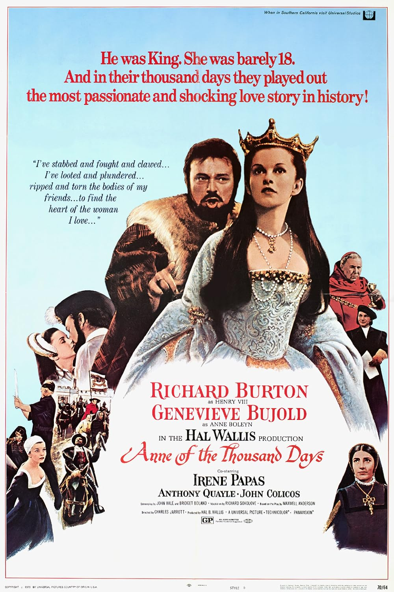

Anne of the Thousand Days
42nd Academy Awards
(Oscars 1970)
10 Nominations, 1 Award
| Nominations | ||
|---|---|---|
| Category | Nominees | Result |
| Best Picture | Hal B. Wallis | Nominated |
| Actor | Richard Burton | Nominated |
| Actress | Genevieve Bujold | Nominated |
| Actor in a Supporting Role | Anthony Quayle | Nominated |
| Writing (Screenplay--based on material from another medium) | Bridget Boland, John Hale, and Richard Sokolove | Nominated |
| Cinematography | Arthur Ibbetson | Nominated |
| Art Direction | Lionel Couch, Maurice Carter, and Patrick McLoughlin | Nominated |
| Costume Design | Margaret Furse | Won |
| Sound | John Aldred | Nominated |
| Music (Original Score--for a motion picture [not a musical]) | Georges Delerue | Nominated |